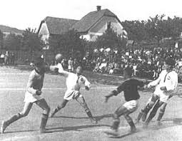
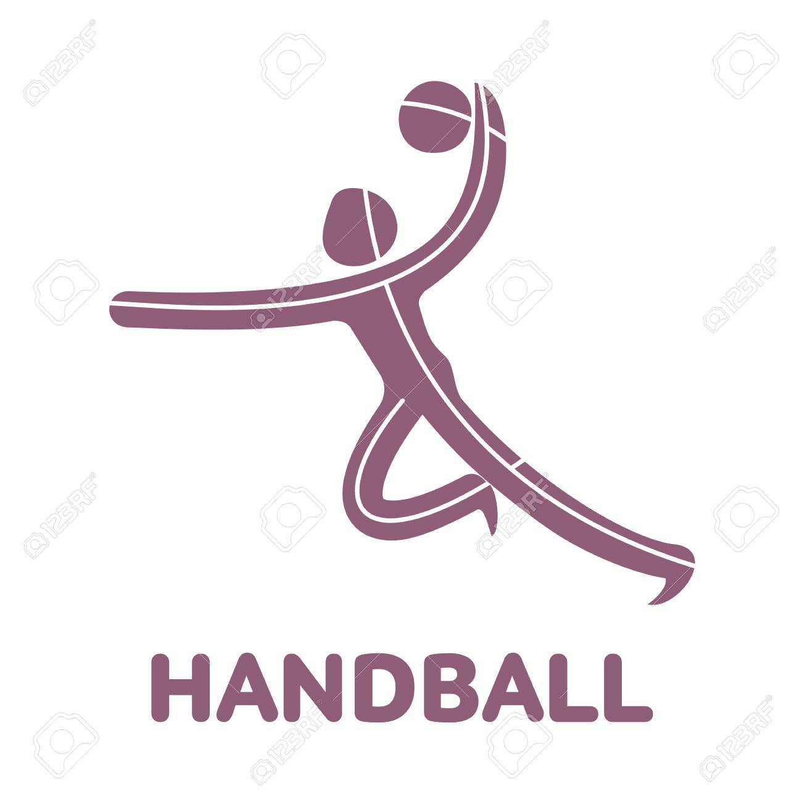
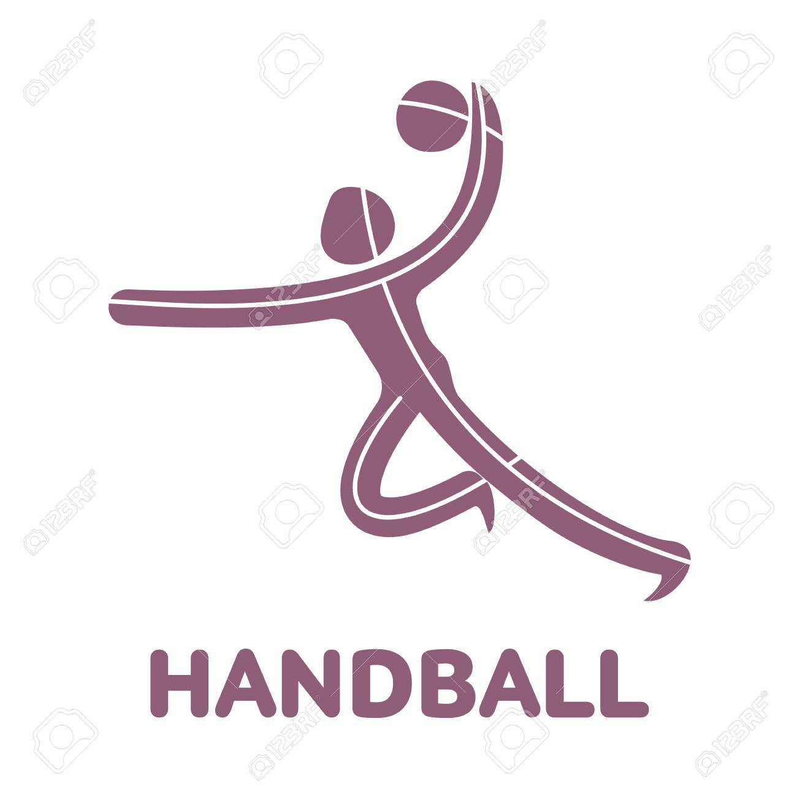

Orígenes del Balonmano
Orígenes antiguos: Aunque el balonmano moderno como lo conocemos tiene sus raíces en Europa a fines del siglo XIX y principios del XX, el concepto de un deporte en el que se utiliza la mano para lanzar una pelota es mucho más antiguo. Civilizaciones antiguas como los griegos y los romanos ya practicaban juegos que involucraban el uso de las manos y una pelota. Se cree que juegos similares a lo que hoy llamamos balonmano fueron practicados en la antigua Grecia (como el "Urania") y en Roma. También hay referencias a un deporte medieval llamado "Handball" que se jugaba en Europa. Desarrollo en el siglo XIX: El balonmano moderno tiene sus raíces en Europa, especialmente en Dinamarca, Alemania y Suecia. Fue en estas regiones donde se comenzaron a establecer las primeras reglas formales del deporte. En 1898, un profesor danés llamado Holger Nielsen creó un juego conocido como "Haandbold" que se jugaba en una cancha más pequeña y con siete jugadores por equipo, similar al balonmano actual..
Expansión y evolución: El balonmano rápidamente ganó popularidad en Europa, y en 1926 se llevó a cabo la primera reunión de la Federación Internacional de Balonmano Amateur (IAHF) en Ámsterdam, donde se sentaron las bases para las competiciones internacionales. En 1936, el balonmano al aire libre de 11 jugadores se incluyó como deporte de exhibición en los Juegos Olímpicos de Berlín, lo que ayudó a aumentar su visibilidad. Sin embargo, a medida que el deporte crecía, también comenzaron a surgir diferentes versiones del mismo. Durante la década de 1940, el balonmano de sala (con siete jugadores) empezó a ganar popularidad debido a las mejores condiciones que ofrecían los gimnasios cubiertos. La versión de sala, más rápida y dinámica, fue adoptada como la forma preferida en muchos países. La era moderna: En 1946 se fundó la Federación Internacional de Balonmano (IHF), y desde entonces ha sido la principal organización que gobierna el balonmano a nivel mundial. El balonmano de siete jugadores se incluyó por primera vez en los Juegos Olímpicos de Múnich 1972 como deporte de exhibición, y luego se incorporó permanentemente al programa olímpico desde los Juegos de Montreal 1976. Desde entonces, el balonmano ha experimentado un crecimiento global. Europa ha seguido siendo el principal bastión del balonmano, con países como Dinamarca, Francia, Alemania, España y Suecia dominando tanto a nivel de clubes como en competiciones internacionales. A nivel de clubes, torneos como la Liga de Campeones de la EHF (European Handball Federation) se han convertido en algunos de los eventos deportivos más emocionantes en Europa. Reglas y características: El balonmano moderno se juega en una cancha de 40 metros de largo por 20 metros de ancho. Cada equipo está compuesto por siete jugadores (seis jugadores de campo y un portero). El objetivo es marcar más goles que el equipo contrario lanzando el balón en la portería rival. Se permite el contacto físico, pero debe ser controlado, y los jugadores pueden dar hasta tres pasos con el balón antes de tener que pasar o botarlo. Una característica importante del balonmano es su rapidez. Los jugadores deben moverse constantemente, lo que hace que el deporte sea muy dinámico. La velocidad, la resistencia y la coordinación son esenciales, y esto lo convierte en uno de los deportes de equipo más espectaculares para ver. Importancia y evolución actual: A lo largo de los años, el balonmano ha continuado creciendo no solo en Europa, sino también en otras regiones como Asia, África y América. Países como Egipto, Qatar y Brasil han mejorado notablemente su nivel en los últimos años, desafiando a las potencias europeas tradicionales en torneos internacionales. El balonmano ha seguido evolucionando en términos de popularidad, profesionalización y técnica. Las ligas europeas, como la francesa, la alemana y la española, son altamente competitivas y atraen a los mejores jugadores del mundo. Además, la creación de la EHF Champions League ha elevado el nivel de los clubes y ha permitido que los fanáticos disfruten de espectáculos de alto nivel. En resumen, el balonmano es un deporte con raíces profundas, que ha evolucionado significativamente a lo largo de la historia y se ha consolidado como uno de los deportes de equipo más rápidos, dinámicos y emocionantes a nivel mundial. Su crecimiento y popularidad siguen en ascenso, consolidándose como una de las disciplinas más emocionantes tanto a nivel olímpico como en campeonatos internacionales..
El Balonmano en los Juegos Olímpicos
El balonmano hizo su debut en los Juegos Olímpicos de Berlín en 1936 como un deporte al aire libre. No fue hasta los Juegos Olímpicos de Múnich en 1972 cuando se estableció como un deporte de interior y se consolidó como una disciplina olímpica para hombres y mujeres.


 
